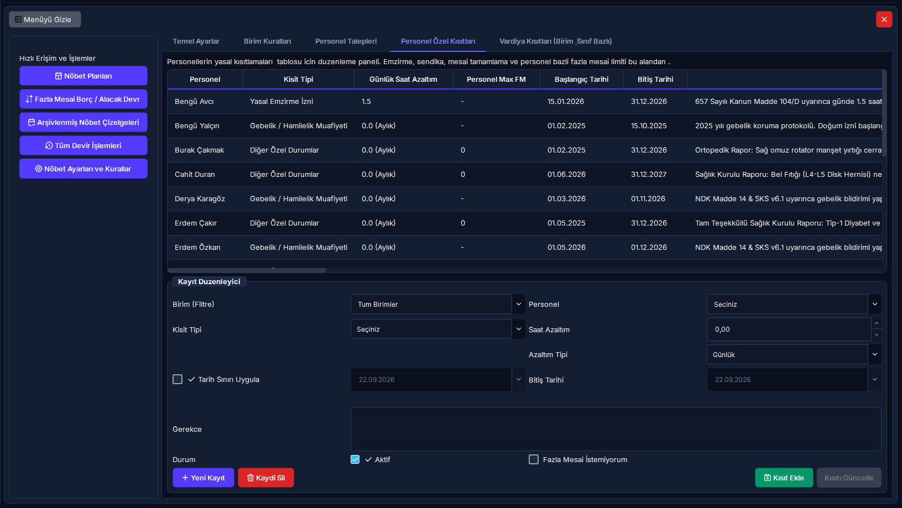

Personel Özel Sağlık Kısıtları, Yasal Haklar ve Fazla Mesai Engelleri
Gebe personelin 5 fazlı radyasyon koruma döngüsünü, yasal süt/emzirme saat indirimlerini, sendika yöneticisi mesai azaltımlarını, sağlık kurulu/analık raporlarını, doz aşımı korumalarını ve bireysel fazla mesai engellerini yönetmenizi sağlar.
Kısa Reçete: Bireysel Yasal Sağlık Kısıtı Tanımlama
Yasal koruma altındaki çalışanın gece nöbetinden, radyasyon riskinden veya fazla mesaiden otomatik ve mevzuata tam uyumlu biçimde korunması.
[Personel Özel Kısıtları] sekmesinde personeli ve kısıt türünü (örneğin Gebelik / Hamilelik Muafiyeti veya Yasal Emzirme İzni) seçin; tarih aralığı ile saat azaltımını doğrulayıp [Kısıt Ekle] butonuna basın.
Gebelik ve doz aşımında gece nöbeti ile fazla mesai sıfırlanır; emzirme ve sendika izinlerinde mesai hedefi otomatik düşülür; doğum sonrası kesin tarih değiştiğinde tek tıkla 5 faz güncellenir.
5N1K Kural ve Arayüz Çözümleme Tablosu
Personel Özel Kısıtları sekmesindeki 9 yasal kısıt türü, saat azaltım rejimi ve gebelik yaşam döngüsü kontrolleri.
Arayüz Ekran Görünümleri

Adım Adım İşlem Rehberi
1. Süt İzni, Sendika veya Gebelik Kısıtı Kaydetme
- [Personel Özel Kısıtları] sekmesine geçin ve yeni kayıt için [Yeni Kayıt] butonuna basın.
- Kayıt Duzenleyici panelinde Departman/Personel seçimini yapın ve Kısıt Tipinden ilgili kategoriyi (örneğin Yasal Emzirme İzni veya Gebelik / Hamilelik Muafiyeti) seçin.
- Sistemin otomatik önerdiği Saat Azaltımı (ilk 6 ay 3 saat, ikinci 6 ay 1.5 saat) ile [Fazla Mesai İstemiyorum] ve [Tarih Sınırı Uygula] aralıklarını doğrulayın; resmi rapor referansını gerekçeye yazıp [Kısıt Ekle] butonuna tıklayın.
2. Gebelik Zincirinde Doğum Tarihi Güncelleme veya Sonlandırma
- Tablodan gebelik yaşam döngüsüne bağlı personel satırını seçin.
- Bebek beklenenden farklı tarihte doğduysa [Doğum Tarihi Güncelle] butonuna tıklayıp kesin tarihi girin (tüm doğum sonrası analık ve emzirme fazları otomatik kaydırılır); gebelik tıbbi zorunlulukla erken sonlandıysa [Gebelik Sonlandı] butonunu kullanın.
- Tarih veya süre revizyonu için [Kısıtı Güncelle], hatalı kaydı kaldırmak için [Kaydi Sil] butonunu kullanın.
Sıkça Sorulan Sorular (SSS)
Gebe personele acil durumda dahi gece nöbeti veya denetimli alan görevi yazılabilir mi?
Doğum sonrası emzirme (süt izni) ve sendika indirimi hesapları nasıldır?
Yasal emzirme izninde ilk 6 ay günde 3 saat, ikinci 6 ay günde 1,5 saat azaltım uygulanır ve emzirme süresince radyoaktif kontaminasyon riskli açık kaynak işlerine atanmaz. Sendika yöneticisi muafiyetinde ise 657'li memurlarda haftalık 4 saat, 4857'li işçilerde haftalık 2 saat indirim hedeften düşülür.
Bitiş tarihi geçmiş bir sağlık kısıtı personelin gelecek planlarını etkilemeye devam eder mi?
Hayır. [Tarih Sınırı Uygula] kutusu aktifse belirtilen bitiş tarihinden sonraki aylarda dağıtım motoru kısıtı dikkate almaz ve personel standart nöbet düzenine otomatik döner.